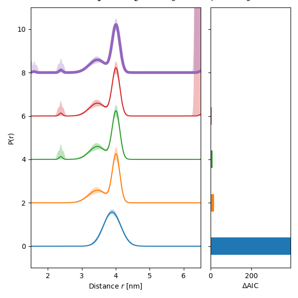
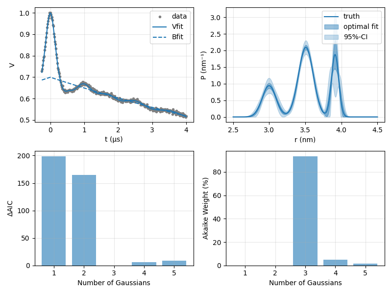

Note
Click here to download the full example code
Multi-Gauss fit of a 4-pulse DEER signal¶
This example showcases how to fit a simple 4-pulse DEER signal with background using a multi-Gauss distance distribution model, determining the optimal number of Gaussians.
import numpy as np
import matplotlib.pyplot as plt
import deerlab as dl
Model function for a 4pDEER dipolar kernel¶
The first step for this analysis requires the definition of a parametric dipolar kernel for the description of a 4-pulse DEER experiment.
def K4pdeer(par,t,r):
# Unpack parameters
lam,conc = par
# Simualte background
B = dl.bg_hom3d(t,conc,lam)
# Generate dipolar kernel
K = dl.dipolarkernel(t,r,mod=lam,bg=B)
return K
Generating a dataset¶
t = np.linspace(-0.25,4,300) # time axis, µs
r = np.linspace(2.5,4.5,300) # distance axis, nm
param0 = [3, 0.1, 0.2, 3.5, 0.1, 0.45, 3.9, 0.05, 0.20] # parameters for three-Gaussian model
P = dl.dd_gauss3(r,param0) # ground truth distance distribution
lam = 0.3 # modulation depth
conc = 250 # spin concentration, µM
noiselvl = 0.005 # noise level
# Generate 4pDEER dipolar signal with noise
K = K4pdeer([lam,conc],t,r)
V = K @ P + dl.whitegaussnoise(t,noiselvl,seed=0)
Multi-Gauss fitting¶
# Parameter bounds:
# lambda conc rmean sigma
lb = [1, 0.05] # distribution basis function lower bounds
ub = [20, 2.5] # distribution basis function upper bounds
lbK = [0, 0.05] # kernel parameters lower bounds
ubK = [1, 1500] # kernel parameters upper bounds
# Prepare the kernel model
Kmodel = lambda par: K4pdeer(par,t,r)
NGauss = 5 # maximum number of Gaussians
# Fit the kernel parameters with an optimized multi-Gauss distribution
fit = dl.fitmultimodel(V,Kmodel,r,dl.dd_gauss,NGauss,'aic',lb,ub,lbK,ubK)
#Extract results
Pfit = fit.P
Kparfit = fit.Kparam
Puq = fit.Puncert
paramuq = fit.paramUncert
metrics = fit.selfun
Peval = fit.Pn
# Get the time-domain fit
K = Kmodel(Kparfit)
Vfit = K@Pfit
# Confidence intervals of the fitted distance distribution
Pci95 = Puq.ci(95) # 95#-confidence interval
Pci50 = Puq.ci(50) # 50#-confidence interval
Akaike weights¶
When comparing different parametric models is always a good idea to look at the Akaike weights for each model. They basically tell you the probability of a model being the most optimal choice.
# Compute the Akaike weights
dAIC = metrics - min(metrics)
Akaikeweights = 100*np.exp(-dAIC/2)/sum(np.exp(-dAIC/2))
Plots
plt.figure()
for i in range(len(Peval)):
plt.plot(r,Peval[i] + 2*i,'-',color='tab:blue',linewidth=1.5)
plt.grid(alpha=0.3)
plt.xlabel('r (nm)')
plt.ylabel('Number of Gaussians')
plt.legend(['truth','fit'])
plt.tight_layout()
plt.show()
plt.figure(figsize=(8,6))
plt.subplot(221)
plt.plot(t,V,'.',color='grey')
plt.plot(t,Vfit,'tab:blue',linewidth=1.5)
plt.plot(t,(1-Kparfit[0])*dl.bg_hom3d(t,Kparfit[1],Kparfit[0]),'--',color='tab:blue',linewidth=1.5)
plt.grid(alpha=0.3)
plt.legend(['data','Vfit','Bfit'])
plt.xlabel('t (µs)')
plt.ylabel('V')
plt.subplot(222)
plt.plot(r,Pfit,'tab:blue',linewidth=1.5)
plt.fill_between(r,Pci50[:,0],Pci50[:,1],color='tab:blue',linestyle='None',alpha=0.45)
plt.fill_between(r,Pci95[:,0],Pci95[:,1],color='tab:blue',linestyle='None',alpha=0.25)
plt.grid(alpha=0.3)
plt.legend(['truth','optimal fit','95%-CI'])
plt.xlabel('r (nm)')
plt.ylabel('P (nm⁻¹)')
plt.subplot(223)
plt.bar(np.arange(NGauss)+1,metrics + abs(min(metrics)),facecolor='tab:blue',alpha=0.6)
plt.grid(alpha=0.3)
plt.ylabel('$\Delta$AIC')
plt.xlabel('Number of Gaussians')
plt.subplot(224)
plt.bar(np.arange(NGauss)+1,Akaikeweights,facecolor='tab:blue',alpha=0.6)
plt.grid(alpha=0.3)
plt.ylabel('Akaike Weight (%)')
plt.xlabel('Number of Gaussians')
plt.tight_layout()
plt.show()
- 
- 
Total running time of the script: ( 0 minutes 16.812 seconds)